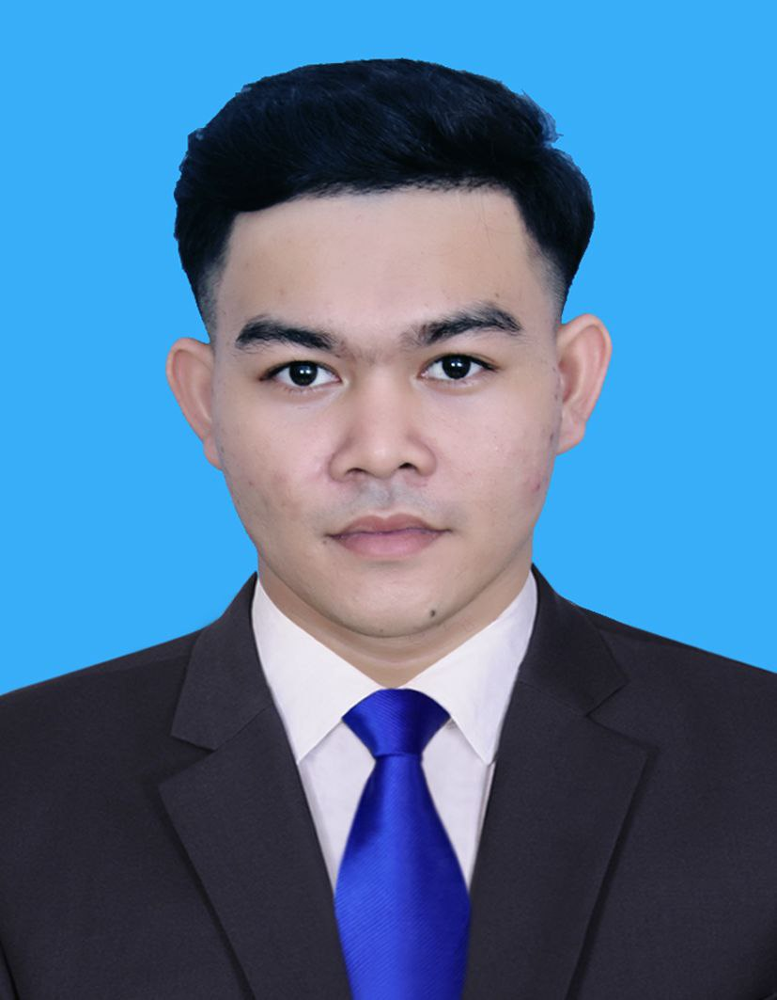

|
Royal University of Phnom Penh Phnom Penh, Cambodia 096 245 0642 phaldarith11@gmail.com Kandal Province, Cambodia |
 |
Gender: Male
Date of Birth: 18 January 2006
Age: 20
Nationality: Cambodian
Marital Status: Single
Health: Good
Graphic Design (Intermediate), Microsoft Word, Microsoft Excel, Microsoft PowerPoint, Web Development, Good Communication, Teamwork & Collaboration, Flexibility & Adaptability, Professional Attitude
2025 to Present
Bachelor's Degree in Computer Science and Engineering. Currently studying computer science, programming, web development, and other information technology subjects.
2020 to 2024
Completed high school education in Kandal Province, Cambodia.
2017 to 2020
Completed secondary school education in Kandal Province, Cambodia.
2024 to Present
Skills: Web Development, HTML, CSS, Problem Solving, Teamwork
2024 - 3 Months
Skills: IT Operations, Computer Skills, Communication
2023 to 2024 - 6 Months
Skills: Communication, Teaching, Computer Skills, Teamwork
2021 to 2024 - 3 Years
Skills: Teamwork, Communication, Leadership, Responsibility
Copyright © 2026 by Phal Darith. All rights reserved.